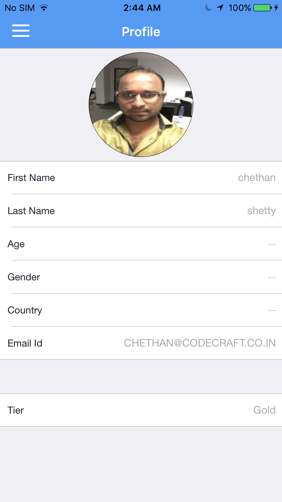
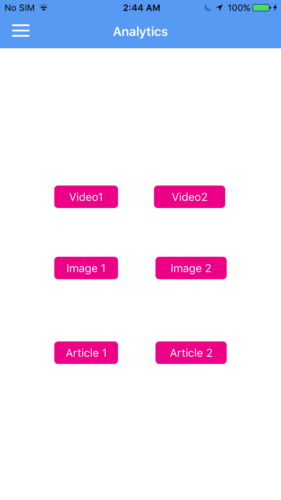

Reflections of Visionary Minds

The following table lists down the Sequential Steps during the Run
TestCase Name: verify : Iteration 1
Time Taken for Executing: 97 Sec
Current Run Number: Run 41 Method Type: Test Method
TestCase Name: verify : Iteration 1
Time Taken for Executing: 97 Sec
Current Run Number: Run 41 Method Type: Test Method
Requirement Coverage/ TestCase Description
Requirement Coverage/Build Info/Cycle - Description
Execution Platform Details
| O.S | : | Mac OS X, x86_64Bit, v10.11.1 |
| Java | : | 1.7.0_21 |
| Hostname | : | QAs-Mac-mini.local |
| Selenium | : | 2.48.2 |
Summary
| Status | : | Passed |
| Execution Date | : | 10-May-2016 03:15:47 |
| Browser | : | iOS, |
Author Info
| Author Name | : | Unknown |
| Creation Date | : | Unknown |
| Version | : | Unknown |
| System User | : | Chethan |
| S.No | Step Description | Input Value | Expected Value | Actual Value | Time | Line No | Status | Screen shot |
|---|---|---|---|---|---|---|---|---|
| 1 | **** Application has been successfully logged in **** | 52 Sec | 68 |  |
 | |||
| 2 | Test Scenario : Navigating to Analytics screen and tapping on Video 1, Video 2, Image and Article button. | |||||||
| 3 | -----Test Case 4----- 1. Tap on Menu button 2. Tap on Article button. 3. Tap on Video 1 button. 3. Tap on Video 2 button. 3. Tap on Image button. 3. Tap on Article button. | |||||||
| 4 | Application has successfully clicked on video 1,Video 2, Image and Article button. | 48 Sec | 103 | |
 | |||
| 5 | Test Scenario : Logout from the application. | |||||||
| 6 | -----Test Case 4----- 1. Tap on Menu button 2. Tap on Logout button. | |||||||
{kind=link}
{kind=link}